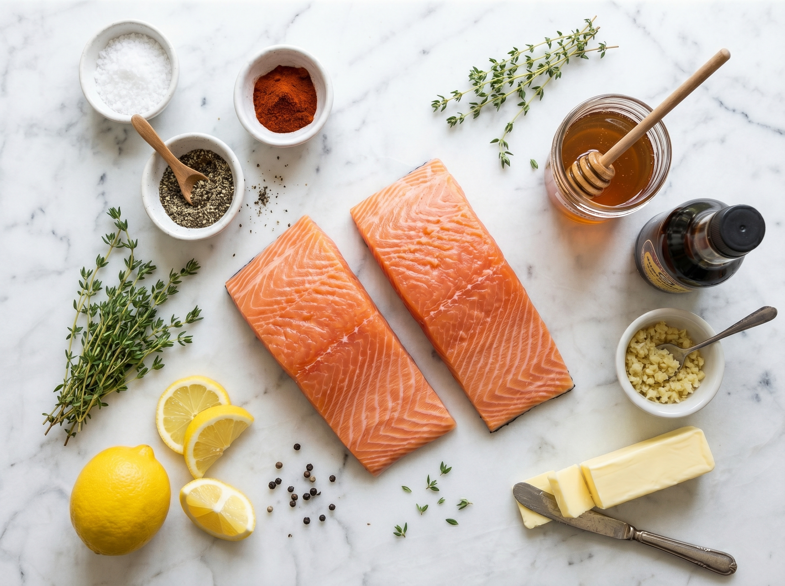
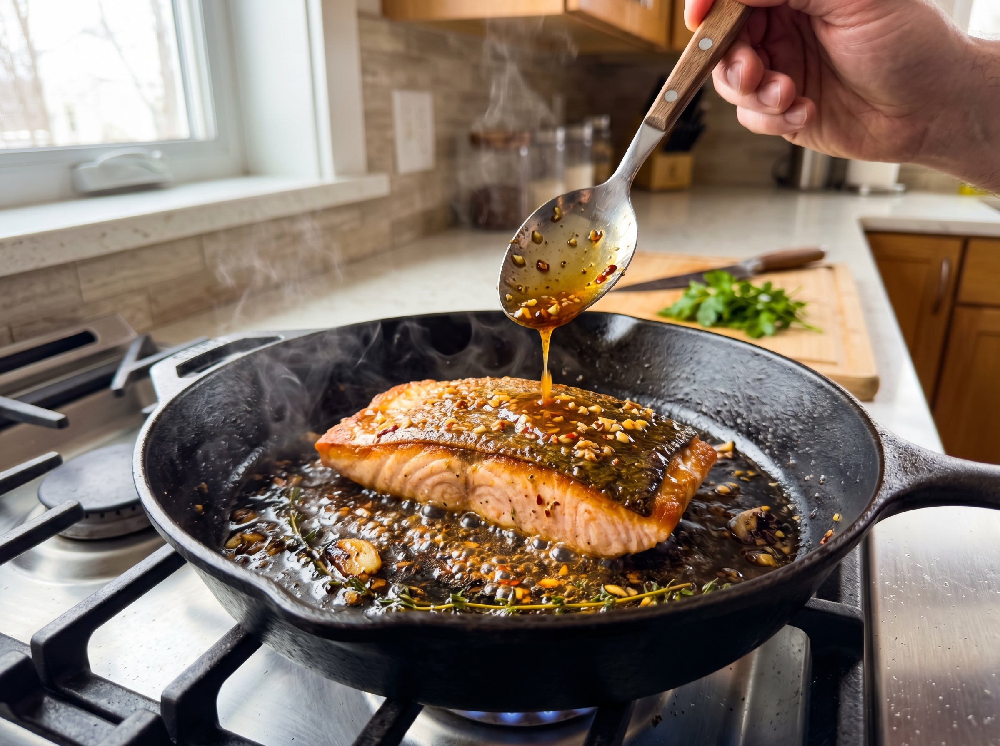
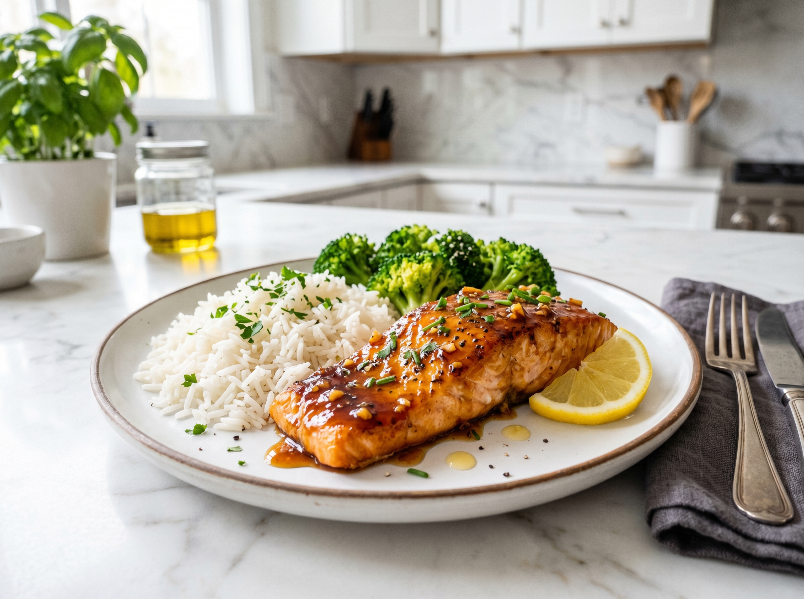

This crispy honey garlic salmon is the recipe I make when I want something that looks and tastes impressive but takes less time than ordering delivery. Crispy on the outside, flaky and tender inside, coated in a sticky sweet-savory glaze — it hits every note perfectly in just 17 minutes.
I've made a lot of salmon recipes over the years, but this glaze is the one that gets people asking for the recipe at the dinner table. The secret is cornstarch in the glaze — it thickens quickly under heat and creates that glossy, restaurant-style lacquer on the fish. The sesame oil adds a subtle nuttiness that ties the whole dish together.
Why You'll Love This Recipe
- 17 minutes start to finish — the fastest dinner on this site
- 5 ingredients for the glaze — all pantry staples
- Crispy exterior, flaky interior — the technique makes all the difference
- Healthy and satisfying — packed with omega-3s and protein
- Impressive enough for guests — looks like a restaurant dish
Choosing Your Salmon
The best salmon for this recipe is skin-on Atlantic or Pacific salmon fillets, each about 6–8 oz (170–225g). Here's where to buy the best salmon in the US:
- Whole Foods — excellent fresh and frozen options, including wild-caught sockeye and Atlantic farmed
- Trader Joe's — their frozen wild-caught salmon is fantastic quality for the price and thaws perfectly overnight
- Costco / Sam's Club — buy a whole side and portion it yourself for the best value
- Kroger / Publix / any major grocery — fresh salmon at the seafood counter is great; just ask when it came in
Wild-caught vs. farmed: Both work in this recipe. Wild-caught (sockeye, coho) tends to be leaner and more deeply flavored. Farmed Atlantic salmon is fattier, which means it's more forgiving to cook and stays very moist.
About the Honey Garlic Glaze
This glaze is four ingredients that you almost certainly already have:
- Honey — any kind works. Clover honey (the standard US grocery store variety) is perfect.
- Soy sauce — use low-sodium so the glaze doesn't get too salty as it reduces. Kikkoman is the most widely available brand in the US.
- Garlic — fresh minced cloves, please. The flavor difference versus jarred garlic is very noticeable in a quick-cooking glaze like this.
- Sesame oil — toasted sesame oil (the darker, fragrant kind) adds incredible depth. Find it in the Asian foods aisle at any US grocery store.
- Cornstarch — the secret to a glossy, sticky glaze that coats the fish beautifully instead of sliding off.
Crispy Honey Garlic Salmon
Crispy pan-seared salmon with a sticky honey garlic glaze. Five simple ingredients. Seventeen minutes. Pure weeknight magic.
Ingredients

Salmon
Honey Garlic Glaze
Garnish
Instructions
-
1
Make the glaze. Whisk together honey, soy sauce, minced garlic, lemon juice, sesame oil, and cornstarch in a small bowl until the cornstarch is fully dissolved and there are no lumps. Set aside near the stove — you'll need it quickly.
-
2
Prep the salmon. Pat salmon fillets completely dry with paper towels — moisture is the enemy of a crispy crust. Season both sides with salt and pepper. If your fillets are cold from the fridge, let them sit at room temperature for 10 minutes.
-
3
Sear flesh-side down first. Heat oil in a non-stick or stainless skillet over medium-high heat until hot and shimmering — a drop of water should sizzle immediately. Place salmon flesh-side DOWN (not skin side) and press gently with a spatula for 10 seconds to ensure full contact. Cook undisturbed for 3–4 minutes until the sides of the salmon are turning opaque halfway up.
-
4
Flip and add the glaze. Flip the salmon so it's now skin-side down. Immediately pour the glaze over and around the fillets. The glaze will bubble aggressively — that's perfect. Spoon the glaze back over the top of the salmon repeatedly as it cooks. Cook 3–4 more minutes, basting constantly, until the glaze is thick and syrupy and the salmon flakes easily when tested with a fork.
-
5
Rest and serve. Transfer salmon to plates. Spoon any remaining glaze from the pan over the top. Sprinkle with sesame seeds and sliced green onions. Serve with lemon wedges and your chosen sides.

The Secrets to Perfectly Crispy Salmon
- DRY the fish. Moisture on the surface creates steam, which prevents crisping. Paper towels are your best friend here.
- Hot pan, cold fish. Wait until the oil is fully shimmering before adding the salmon. A lukewarm pan means steamed fish, not crispy fish.
- Don't move it. Once the salmon is in the pan, leave it completely alone until it's ready to flip. It will naturally release when it's properly seared.
- Baste constantly. Once the glaze is in, spoon it over the salmon every 30 seconds. This builds up the glossy lacquer finish.
- Pull at 130°F / 54°C. Salmon continues cooking after you remove it from heat. If you wait for 145°F, it'll be dry by the time it reaches your plate.
Variations
- Spicy honey garlic: Add ½ teaspoon sriracha or red pepper flakes to the glaze for a sweet heat version.
- Ginger version: Add 1 teaspoon of freshly grated ginger to the glaze for a brighter, more aromatic flavor.
- Orange instead of lemon: Substitute fresh orange juice for the lemon for a sweeter citrus note.
- Gluten-free: Replace soy sauce with tamari or coconut aminos — same flavor, no gluten.
- Baked version: Brush salmon with glaze and bake at 400°F / 205°C for 12–15 minutes. Less crispy but more hands-off.
Serving Suggestions

This salmon works with almost any side:
- Steamed jasmine or basmati rice — the glaze drips into the rice beautifully
- Roasted broccoli or asparagus (toss in olive oil and roast at 425°F while the salmon cooks)
- A simple cucumber and sesame salad for a fresh contrast
- Mashed potatoes for a heartier, comfort-food style plate
- Zucchini noodles for a light, low-carb option
Storage & Reheating
Refrigerator
Store cooked salmon in an airtight container for up to 2 days. The crust softens on storage — that's normal.
Freezer
Cooked salmon freezes for up to 2 months. Thaw overnight in the fridge and reheat gently.
Reheat
Reheat in a covered skillet over low heat with a small splash of water for 3 minutes. Avoid the microwave — it overcooks salmon and makes it rubbery.
Frequently Asked Questions
Do I eat the skin on honey garlic salmon?
When cooked properly, salmon skin becomes deliciously crispy — it's arguably the best part! If your skin is crispy, eat it. If it's soft (which can happen on the second day after storage), it's easy to peel off before eating. The skin is rich in omega-3 fatty acids, so there's nutritional value too.
Can I use frozen salmon?
Yes, but you must thaw it completely first and pat it VERY dry. Frozen salmon releases more water than fresh as it thaws — any remaining moisture will steam the fish instead of searing it. For best results, thaw overnight in the refrigerator.
How do I know when salmon is done?
The best method is a fork test: insert a fork at the thickest part and twist gently — perfectly cooked salmon flakes easily into layers. For precision, use an instant-read thermometer: 125–130°F (52–54°C) for medium (slightly translucent in the very center), or 145°F (63°C) for fully cooked (what the FDA recommends). I prefer 130°F for maximum juiciness.
Can I make this without sesame oil?
Sesame oil adds a lot of flavor, but yes — you can skip it and the recipe still works well. You can substitute with a few drops of olive oil or simply leave it out. If you want to buy sesame oil, it's in the Asian foods aisle at Walmart, Kroger, or any US grocery store (Kadoya and Lee Kum Kee are common brands).
What's the difference between Atlantic and wild-caught salmon?
Atlantic salmon is almost always farmed — it's fattier, has a milder flavor, and is more forgiving to cook (the fat keeps it moist). Wild-caught (sockeye, coho, king/chinook) is leaner, more intensely flavored, and bright orange-red in color. Both are excellent in this recipe. If you're new to cooking salmon, start with Atlantic — it's harder to dry out.
Nutrition Information
Per serving (1 fillet with glaze). Values are estimates based on Atlantic salmon.
| Nutrient | Amount per Serving |
|---|---|
| Calories | 390 kcal |
| Total Fat | 16g |
| Saturated Fat | 3g |
| Omega-3 Fatty Acids | 2.5g |
| Protein | 38g |
| Carbohydrates | 18g |
| Sugar | 14g |
| Sodium | 580mg |
You Might Also Love


Did You Try This Salmon?
What did you serve it with? Leave a comment below — I love hearing about the combinations people discover. And if you found this recipe helpful, pinning it on Pinterest helps other home cooks find it too!
📌 Save This Recipe on Pinterest